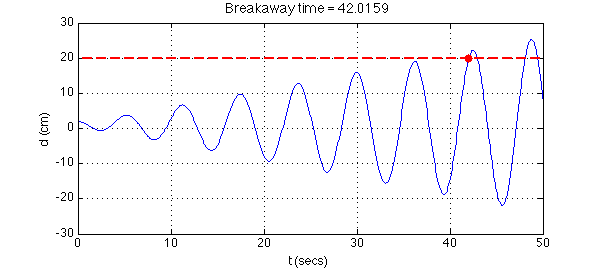

In Problem 3.1.4 of their book Ordinary Differential Equations [1], Carrier and Pearson present the following narrative:
A mathematically minded vandal wishes to break a steam radiator away from its foundations, but finds that when he applies steadily the greatest force of which he is capable ($100$ kg) the $2$-cm displacement of the top of the radiator is only one-tenth of that required for his purposes. He finds, however, that he can apply a force $f(t)$ according to the schedule $$ f(t) = (1-\cos(\omega t)) \times 50\hbox{ kg} $$ for any of a large range of values of $\omega$. The mass of the radiator is $50$ kg and its foundation resists its movement by a force proportional to its displacement. At what frequency and for how long must he exert the force $f(t)$ if he is to succeed?
Well, the vandal clearly has to find the natural frequency of the system and then pump it at that frequency to exploit resonance, just like pumping up a swing. To solve the problem, we note that the total force on the radiator is
$$ [(1-\cos(\omega t)) - d\,] \times 50\hbox{ kg}, $$
where $d(t)$ is the distance of the radiator from its rest position in centimeters. Since $50$ kg is also conveniently the mass of the radiator, Newton's law $F=ma$ gives us the equation $$ d'' + d = 1 - \cos(\omega t) $$ for the displacement as a function of $t$. From the $d'' + d$ terms we see that the natural frequency of this system is $1$, so the vandal should do his business at frequency $\omega = 1$.
Carrier and Pearson expect an analytic solution, which is not hard to determine; the amplitude will grow linearly with $t$. But here of course we will do it with Chebfun. We solve the ODE, and then solve the equation $d=20$ to find the breakaway time:
L = chebop(@(t,d) diff(d,2) + d - (1-cos(t)),[0 50]);
L.lbc = @(d) [d-2; diff(d)];
LW = 'linewidth';
d = L\0; plot(d,LW,1.6), grid on
xlabel('t (secs)'), ylabel('d (cm)'), axis([0 50 -30 30])
hold on, plot([0 50],[20 20],'--r',LW,2)
r = roots(d-20);
breakaway_time = r(1)
plot(breakaway_time,d(breakaway_time),'.r','markersize',28)
title(['Breakaway time = ' num2str(breakaway_time)],'fontsize',14)
breakaway_time = 42.015895525059499

So the vandal does his damage in 42 seconds. This is a very impressive young man, but I think he could apply his talents more constructively.
By the way, how close does the vandal come to achieving the breakaway condition $d=20$ one cycle earlier? Here's the answer:
max(d{35,40})
ans = 19.126234407862356
Reference:
[1] G. E. Carrier and Carl. E. Pearson, Ordinary Differential Equations, Blaisdell, 1968.